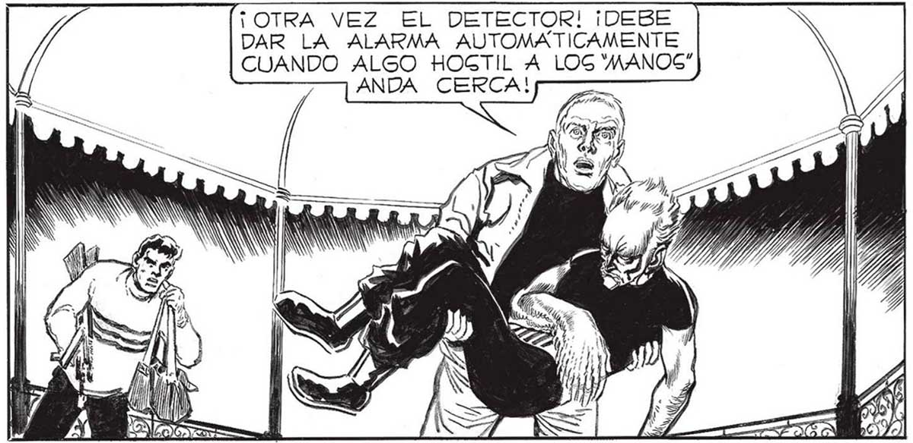
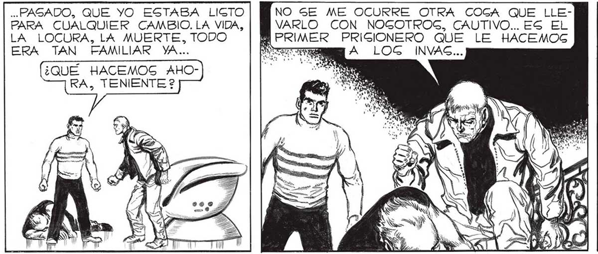

¡FRANCO! PERO... ¿NO ESTABASG DESMAYADO 2 TODO FUE TEATRO, TENIENTE..PARA QUE NO LE PUCIERA A UGTED EGE CASCO EOS SS>SOÓO3S>.) TT ANOS, Y No SÉ CÓMO NO PERDÍ LA CABEZA EN AQUEL MOMENTO. ERA TAN BRUGCO EL VUELCO DE LA GITUACION..TAN GÚBITAMENTE VOLVÍA A RENACER LA ... PAGADO, QUE YO ESTABA LIGTO PARA CUALQUIER CAMBIO, LA VIDA, LA LOCURA, LA MUERTE, TODO ERA TAN FAMILIAR VA... ¿QUÉ HACEMOS AHORA, TENIENTE 2 ¡OTRA VEZ EL DETECTOR! ¡DEBE DAR LA ALARMA AUTOMATICAMENTE CUANDO ALGO HOGTIL A LOG'MANOS” ANDA CERCA! «Y, DE PAGO, PARA VER Sl ME DABA ALGUNA CHANCE DE SACUDIRLO.. TUVE GUERTE, Y RESULTO... VENTAJAG DE HABER ACTUADO UNA VEZ EN UN TEATRO VOCACIONAL, EN LA FABRICA... E PRIMER ESTUPENDO, FRANCO... PERO TENEMOG QUE APROVECHAR : VEN, OPRIME ES” TOG BOTONEG QUE TIENE MI SILLA EN UN COGTADO... NO SE ME OCURRE OTRA COGA QUE LLEVARLO CON NOGOTROG, CAUTIVO... ES EL PRIGIONERO QUE LE HACEMOG A LOG INVAS... RECOJO NUESTRAS ARMAS, SEÑOR... Y LES PREPARO UNA PEQUEÑA GORPRESA... ¿QUÉ HACES, FRANCO? ¡DE UN MOMENTO A OTRO ESTO “E LLENARÁ DE MANOS"! 3 7 Ú Ni 165

